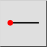

Horizontālā līnija
Rīkjosla / ikona:


Izvēlne: Zīmēt > Līnija > Horizontālā līnija
Īsais ceļvedis: L, H
Komandas: linehorizontal | lh
Rīkjosla / ikona:


Izmantojiet šo rīku horizontālu līniju izveidei. Šis rīks tiek lietots tāpat kā rīks līnijām jebkurā norādītā leņķī, izņemot to, ka leņķis ir fiksēts kā horizontāls.